I. La Instrucción Divina para la Prueba
Jehová ordenó a Moisés realizar una prueba definitiva para confirmar el liderazgo espiritual de Israel. Se solicitó a los hijos de Israel que trajeran doce varas, una por cada casa de los padres. Sobre cada vara se debía escribir el nombre del jefe correspondiente, colocando específicamente el nombre de Aarón sobre la vara de la tribu de Leví.
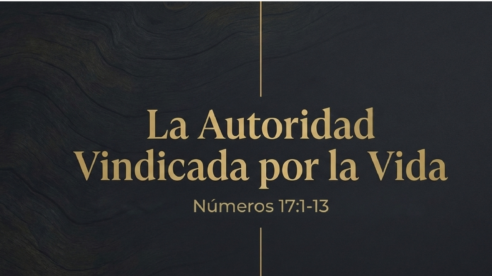
Estas varas fueron depositadas en el tabernáculo de reunión. El propósito era doble: identificar al escogido y erradicar las murmuraciones del pueblo.
II. El Testimonio de la Vida: El Florecimiento
El cumplimiento de la promesa ocurrió al día siguiente. La vara de Aarón mostró una vitalidad sobrenatural, manifestando tres etapas de vida simultáneamente:
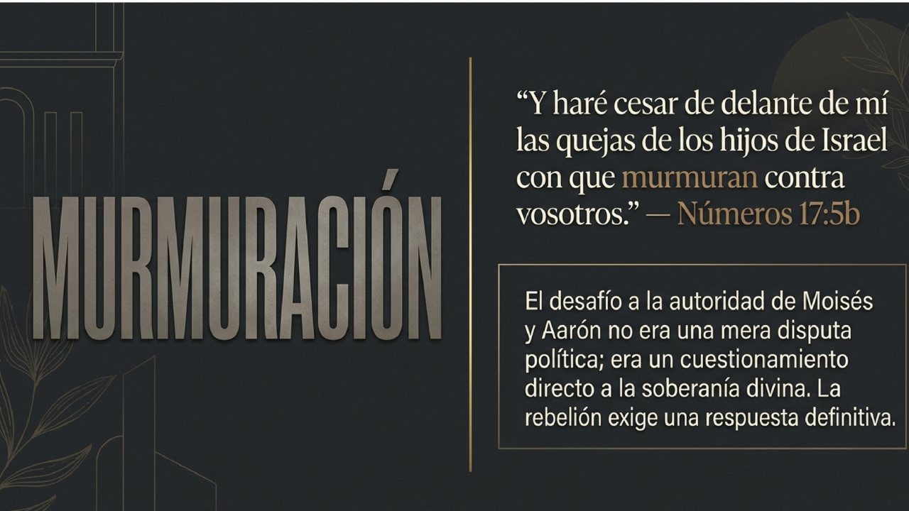
- Había reverdecido (renovación).
- Había producido flores (potencial).
- Había dado almendras (fruto maduro).
Moisés presentó los resultados ante todos los hijos de Israel, evidenciando la elección soberana sobre la casa de Leví.
III. La Señal de Advertencia
Jehová instruyó que la vara fuera guardada como una señal perpetua para los rebeldes. Este objeto no era solo un recordatorio del milagro, sino una advertencia preventiva para proteger la vida del pueblo, evitando que su rebelión provocara un juicio mortal.
IV. La Reacción y el Temor del Pueblo
Ante la santidad manifestada, los hijos de Israel reaccionaron con un profundo temor reverente, reconociendo su vulnerabilidad ante la presencia de lo divino. El estudio concluye con su exclamación de angustia:
"¿Acabaremos por perecer todos?"V. Galería de Apoyo Visual
Toque cualquier lámina para ampliarla y leer su contenido detalladamente:
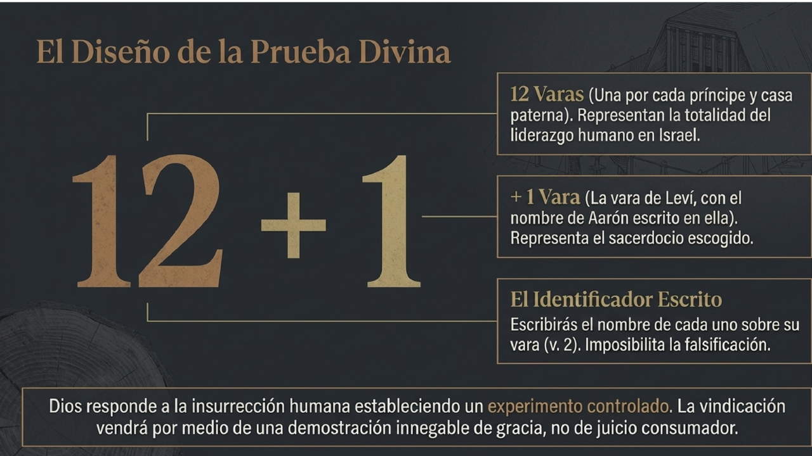
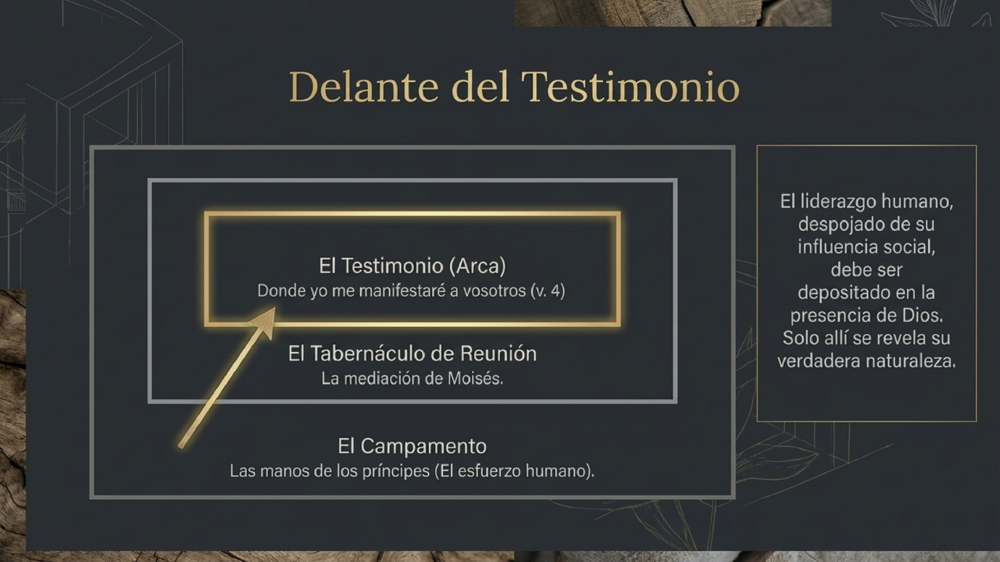
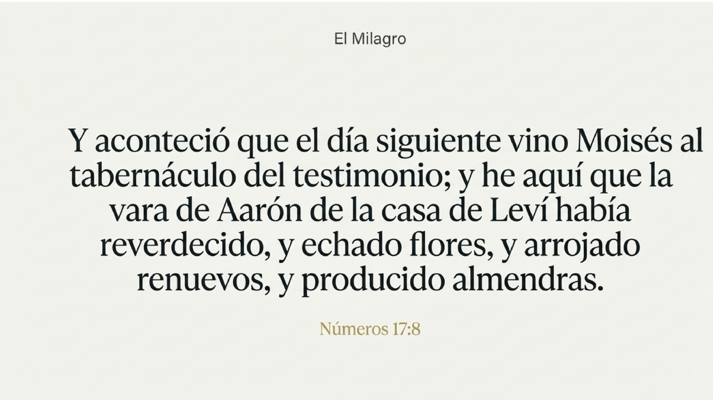
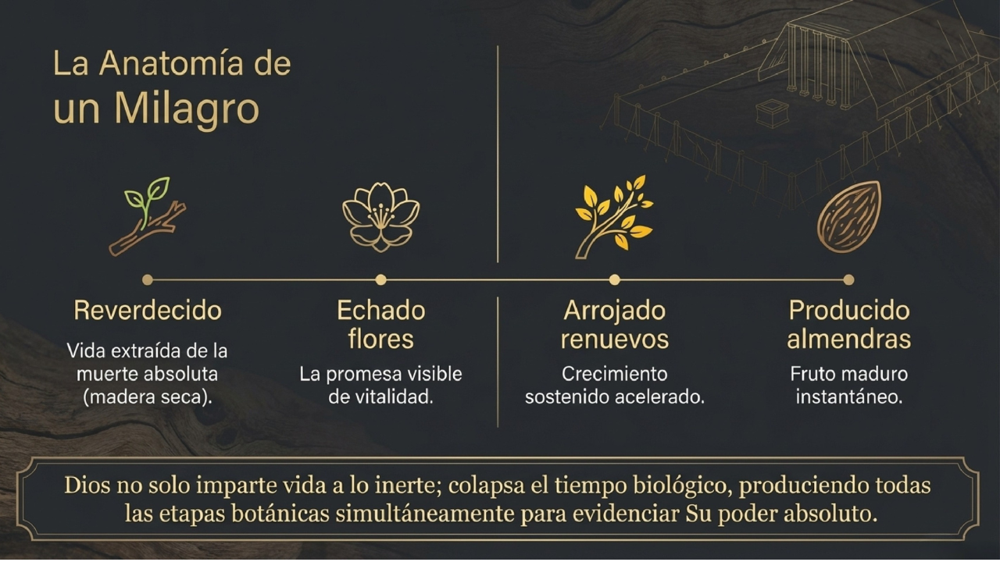
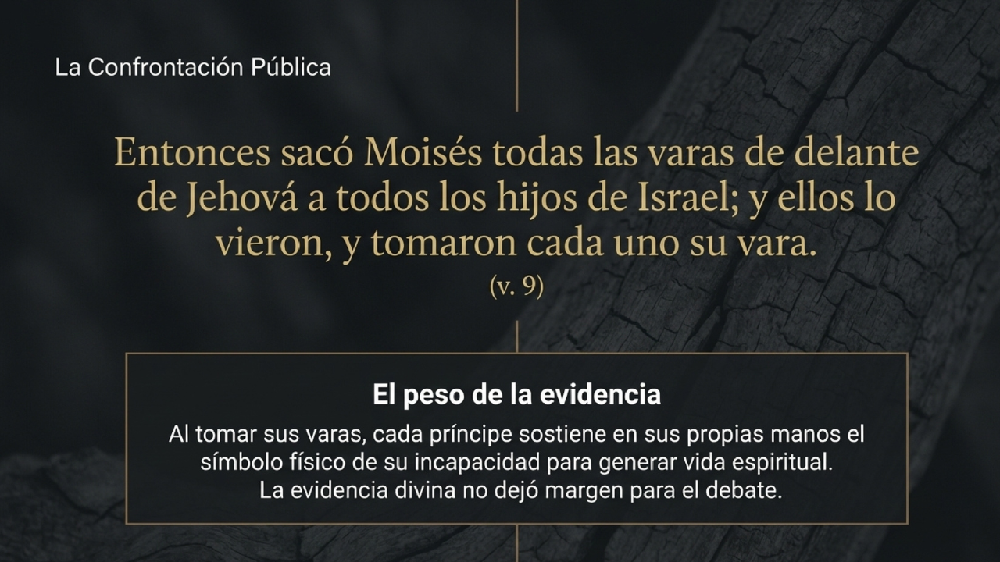
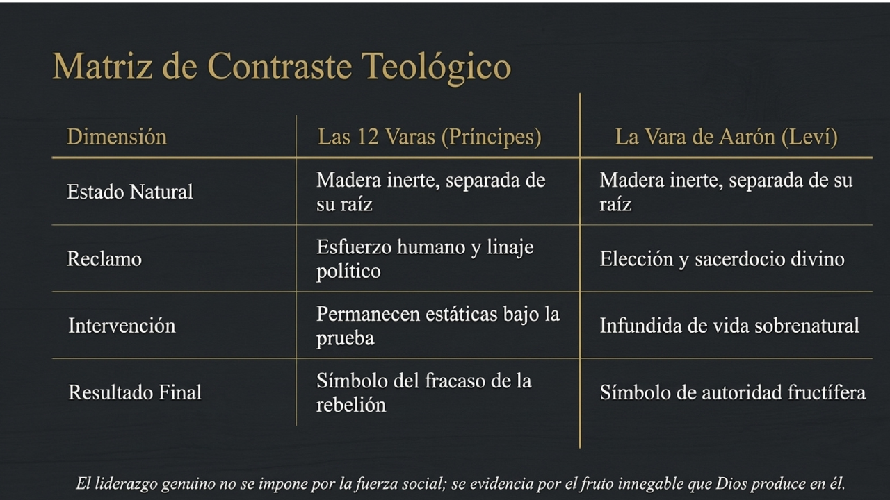
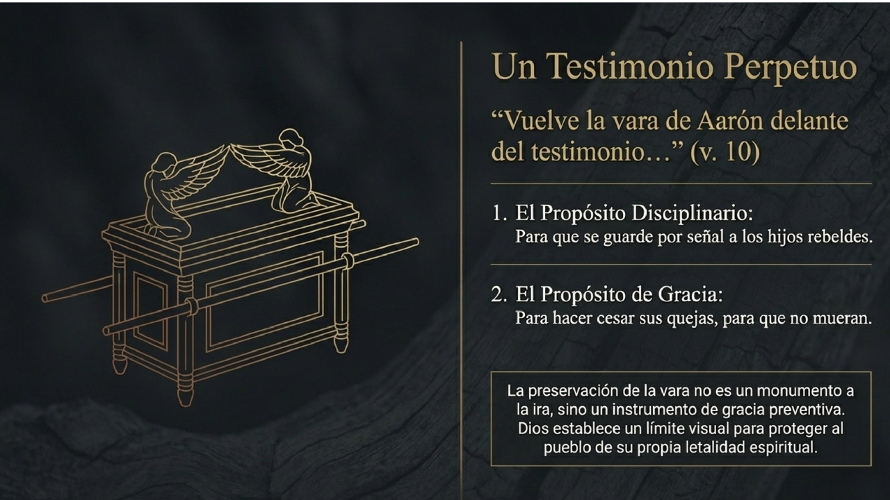
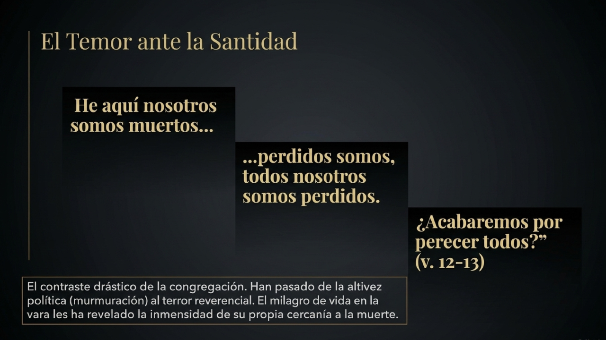
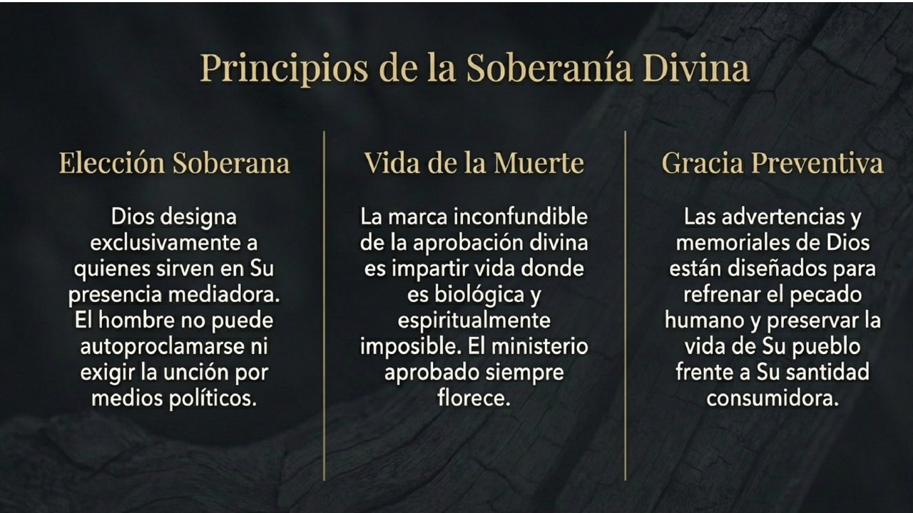
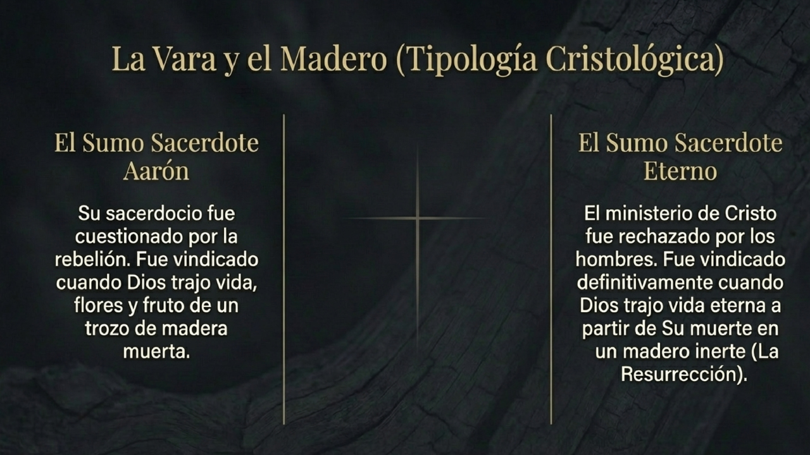
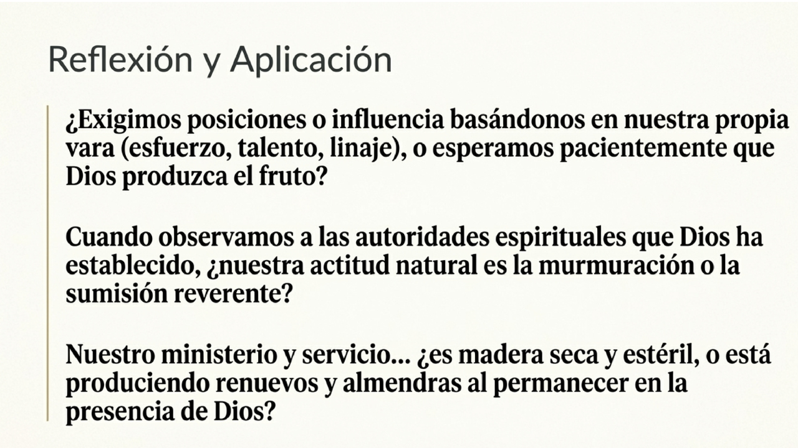
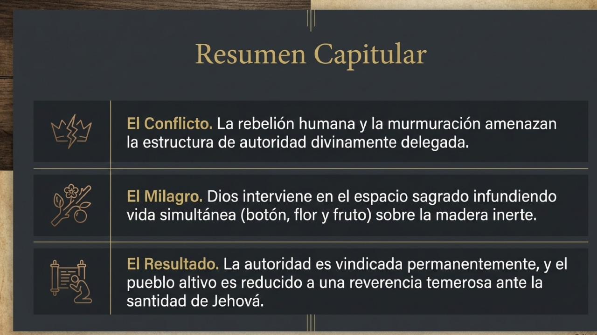
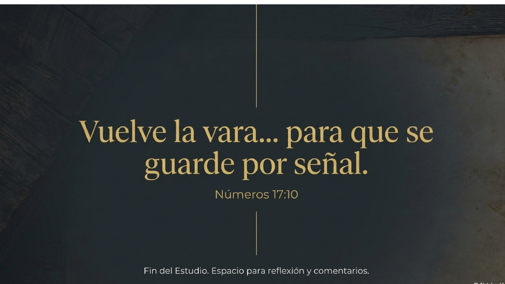